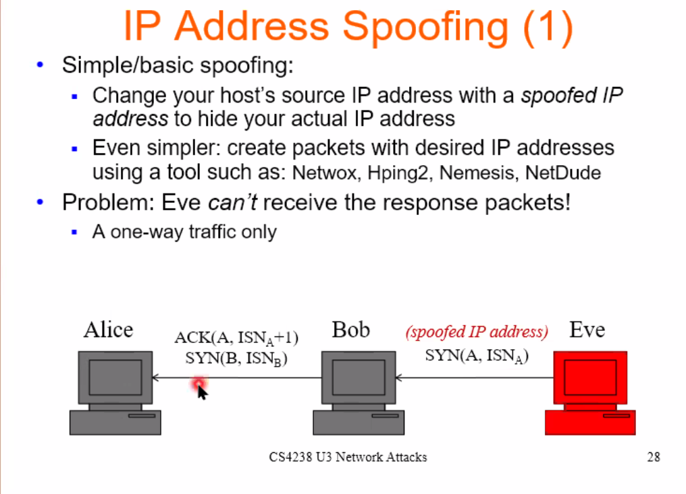

OSI model
HTTP
Cookie
Cookies are unique string identifiers that can be stored on the client’s browser to keep track of client’s state (for the purpose of logging in, serving customised content). They are set by the server through HTTP headers. After the cookie is set, it’s sent along with subsequent HTTP requests to the same server to allow the server to know who is contacting it.
Things involved in the process of setting and using cookies: HTTP request, HTTP response, cookie file on the client’s browser and the database of cookie-user values on the server
Cookie file contains:
- Website’s domain
- String value of cookie
- Date that cookie expires
Set cookie: session=44ecb091; path=/servlets
Note: 3rd party cookies are cookies set for domains that are not being visited. Blocking them is not enough due to several workarounds like respawning cookies etc.
Safari: Preferences > Privacy
Chrome: DevTools > Application > Storage > Cookies
HTTP clients
browser, cURL, postman, XMLHTTPRequest API, Fetch API
Reliance on TCP
HTTP uses TCP as its underlying transport protocol so that messages are guaranteed to get delivered in order. A connection must first be made.
HTTP status codes
- 200 OK - request successfully processed
- 301 - moved permanently
- 403 Forbidden - server denied access to resource
- 400 Bad Request - request is malformed
- 401 Unauthorised - request requires authentication
- 404 Not Found - resource is invalid and does not exist on the server
- 500 Internal Server Error
- 503 Service Unavailable - server overloaded or internal system of server has faile
Content Security Policy
SSL/TLS
See a server's SSL cert
openssl s_client -connect jvns.ca:443 -servername jvns.ca
DNS
Get my DNS server
cat /etc/resolv.conf
where nameserver is the local dns server
or
nslookup <anywebsite>
UDP
User Datagram Protocol
UDP is a connectionless protocol.
How it works
- UDP does not involve any initial handshaking.
- Message may not get delivered.
- Message may have some changes.
- Message may be delivered in the wrong order.
- Checks for corrupted message but does not correct them.
Multiplexing and demultiplexing
UDP message
Consists of:
- Source port number
- Destination port number
- Length of datagram (max 2^16)
- Checksum
- Data
Applications using UDP
- DNS
- Xbox Live
- Network management
- Live audio/video streaming
ICMP
Internet Control Message Protocol
For diagnostics
- Used by
- ping
- traceroute
Messages
- Destination unreachable
- Network unreachable
- Host unreachable
- Protocol unreachable
- Port unreachable
- Fragmentation needed
- Redirect
- Time exceeded
- Echo request and echo reply
- …
ARP
Address Resolution Protocol
Data link layer protocol that maps end host’s IP address to data link’s address
To find the address,
- Check the IPv4 host’s ARP cache
- If none, send a broadcast ARP query frame on the LAN. This frame is received by all devices on the LAN. Host who knows the answer will reply
- Sender updates ARP cache
Address Resolution Protocol
mapping of (MAC address) → (IP address). This table is an ARP cache.
Hosts have this table. If the host doesn’t know a MAC address for a certain IP address, it sends out an ARP request packet, asking other machines for the matching MAC address.
The Address Resolution Protocol (ARP) is used to map an IP address to a fixed MAC address. If a host does not know a MAC address for a certain IP address, it broadcasts an ARP request packet asking other machines who is this. The machine with the corresponding IP address responds to this with an ARP reply packet with the MAC address. This result is stored in the ARP cache of the host.
| MAC address | IP address |
|---|---|
| 5f:44:11 | 192.20.1.1 |
OAuth2.0
https://oauth.net/2/
OAuth2.0 is a standard designed to allow an app to access resources hosted by other web apps on behalf of a user. “resource server” “authentication server”
ARP cache poisoning
ARP cache poisoning works in the following way:
- Victim requests for the MAC address of the machine with IP address
a.b.c.d. - Attacker sends a spoofed reply that maps IP address
a.b.c.dto the attacker’s MAC address. - Victim’s ARP cache is updated (”poisoned”) with this information. Future communications between the victim and IP address
a.b.c.dwill be between the victim and the attacker.
IP address spoofing

Mitigation
https://github.com/shieldfy/API-Security-Checklist https://cheatsheetseries.owasp.org/